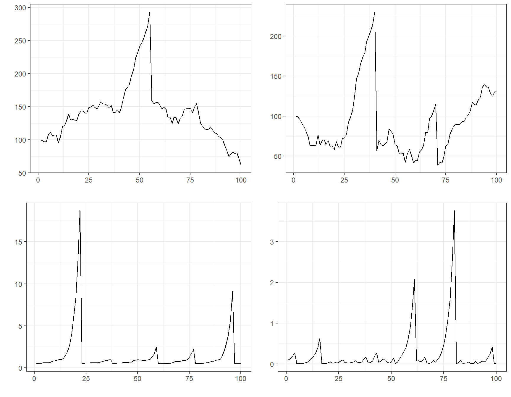

The exuber package has numerous functions which allow the creation of time series which incorporate rational bubble models. These include sim_psy1(), which generates a time series with a single episode of explosive behavior, sim_psy2() which generates a time series with two episodes of explosive behavior. Two rational bubble models are also currently included; sim_blan() which generates a time series containing rational bubbles as proposed by Blanchard (1979). The final function, sim_evans() generates a periodically collapsing rational bubble model series. It is the latter type of bubbles that the GSADF test that PSY attempts to detect.
To test the GSADF test and its associated date-stamping strategy, the BSADF test, PSY utilize a model of dividends and incorporate an Evans (1991) type bubble. We replicate that here to show 1) the ability of exuber to generate realistic simulated time series which incorporate bubbles and 2) to demonstrate the capabilities of radf() to detect them.
Let’s start be generating a realistic prices series incorporating an Evans (1991) type periodically collapsing bubble with the function sim_evans(). We will use the monthly parameterisation detailed in PSY (2015a), which corresponds to the empirical values from the S&P 500. {exuber} contains a function sim_div() which can be used to generate simulated dividends streams from a random walk with drift model.
set.seed(125) # The fundamental value from the Lucas pricing model pf <- sim_div(400) # The Evans bubble term pb <- sim_evans(400) # the scaling factor for the bubble kappa <- 20 # # The simulated price p <- pf + kappa*pb
We can now plot this data to see what it looks like:

Let’s repeat
library(ggplot2) library(purrr) sims <- tibble( sim_psy1 = sim_psy1(100), sim_psy2 = sim_psy2(100), sim_evans = sim_evans(100), sim_blan = sim_blan(100) )
To plot them altogether we can use theautoplot() method for “sim” objects. However, autoplot.sim() is for individual object thus we need some functional programming to plot them together. We can use the purrr::map() function, which iterates through every column of the data.frame and stores them into a list of “ggplot” objects, and then we can arrange with the ggarrange() function into a 2x2 grid.
